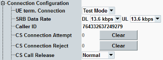

This section describes the highest level of the "Connection Configuration" section.

Selects the connection type to be used for UE terminated connections initiated by the instrument.
In reduced signaling mode, only test mode connections are supported.
- "Voice": The instrument uses a signaling radio bearer (SRB) to set up a connection and allocate a voice channel. The connection path is selected via "Data Source" selection.
For configuration, see "Voice Connection Settings". - "Video": The instrument uses an SRB to set up a circuit switched video call and loops back the received video data including audio to the UE.
- "SRB only": The instrument uses an SRB to establish and maintain the connection.
For configuration, see "SRB Connection Settings". - "Test Mode": The instrument uses an SRB to set up a test mode connection. Four test mode types are available: RMC, HSPA, RMC + HSPA and FACH. For test mode types with RMC, the SRB is established in the CS domain. For type "HSPA", the SRB is established in the PS domain. Test using CELL_FACH state is implemented in CS domain.
For configuration, see "Test Mode Connection Settings".
Selects the signaling radio bearer (SRB) data rate. This setting applies to the connection types "Voice", "Video" and "SRB only".
Note that the higher SRB data rates allocate resources, that cannot be used for user data of voice call. It results in higher spreading factor and higher slot format allocated for connections using narrow band AMR codec and SRB data rate of 13 kbit/s. See also: "Signaling Radio Bearer (SRB)".
For RMC connections, a fixed value of 2.5 kbit/s is used for uplink and downlink. For test mode type "HSPA", a fixed value of 3.4 kbit/s is used.
Remote command:Sets the calling party number of the R&S CMW to be displayed at the UE as defined in 3GPP TS 24.008.
This parameter is suspended in the state CEST (connection established).
Counts the attempts and rejections of CS connections caused by an activated "CM Service Request Reject Cause" or "IMSI Filter". Clear button resets the counters.
Remote command:Specifies the signaling volume from the R&S CMW during the call release:
- Normal release: release according to the specification
- Local end release: release without signaling information